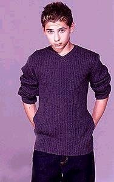

Reese - Justin Berfield
Full Name: Justin Tyler Berfield
Born: 25th February 1986, Pamaram City, California
Hometown: California
Family: Older brother (Lorne)
Pets: 4 dogs, 2 cats, 6 chicken, 1 pig, 14 desert tortoises. Justin's family have had other crazy pets such as: rats, snakes and tarantulas!
Schooling: Justin studies with a private tutor whenever he's shooting Malcolm In The Middle. Otherwise, he attends regular school with his friends.
Hobbies: Fishing, Hockey, Football, Wrestling, Golf, hanging out with friends, and seeing movies.
Favourite T.V show: The Tom Green Show, WWF Smackdown, and Blind Date
Favourite movies: American Pie, Deuce Bigalow: Male Gigalo, and Austin Powers: They Spy Who Shagged Me
Favourite food: Sushi, pizza, spaghetti, and In-N-Out Burger
Favourite kind of music: Rap
Favourite subject: English
Favourite actors: Adam Sandler and Jim Carrey
Movies/T.V shows Justin has appeared in:
Films
Invisible Mom 2 (1999)
The Kid with X-Ray Eyes (1999)
Wanted (1999)
Mom,Can I Keep Her? (1998)
Hocus Pocus (1993)
3 Ninjas (1992)
TV Series
Malcolm in the Middle (2000)
Unhappily
Ever After (1995)
The Good Life (1994)
Television Guest Appearances
The Mommies
The Boys
Are Back
Hardball
Duckman(Voice)
Other Things:
* Justin appeared in ads from 5 years old.
* Justin has a third degree red belt in the martial art Tang Soo Do and has won various state and karate tournament awards.
* Justin auditioned for the role as Anakin Skywalker in Star Wars: Episode I - The Phantom Menace.
* He wants to become a vet when older (if not acting).
* Justin loves The L.A. Kings (hockey), the San Francisco 49ers (football), and the Los Angeles Lakers (basketball).
Created by Michelle!
Home | Photos | Cast Bio's | Links | Quotes